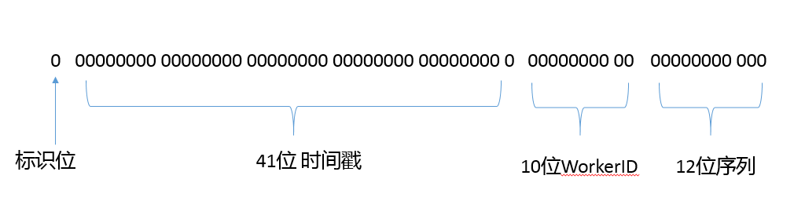

- 00 开篇词 以面试题为切入点，有效提升你的Java内功-极客时间.md
- 01 谈谈你对Java平台的理解？.md
- 02 Exception和Error有什么区别？-极客时间.md
- 03 谈谈final、finally、 finalize有什么不同？-极客时间.md
- 04 强引用、软引用、弱引用、幻象引用有什么区别？-极客时间.md
- 05 String、StringBuffer、StringBuilder有什么区别？-极客时间.md
- 06 动态代理是基于什么原理？-极客时间.md
- 07 int和Integer有什么区别？-极客时间.md
- 08 对比Vector、ArrayList、LinkedList有何区别？-极客时间.md
- 09 对比Hashtable、HashMap、TreeMap有什么不同？-极客时间.md
- 10 如何保证集合是线程安全的 ConcurrentHashMap如何实现高效地线程安全？-极客时间.md
- 11 Java提供了哪些IO方式？ NIO如何实现多路复用？-极客时间.md
- 12 Java有几种文件拷贝方式？哪一种最高效？-极客时间.md
- 13 谈谈接口和抽象类有什么区别？-极客时间.md
- 14 谈谈你知道的设计模式？-极客时间.md
- 15 synchronized和ReentrantLock有什么区别呢？-极客时间.md
- 16 synchronized底层如何实现？什么是锁的升级、降级？-极客时间.md
- 17 一个线程两次调用start()方法会出现什么情况？-极客时间.md
- 18 什么情况下Java程序会产生死锁？如何定位、修复？-极客时间.md
- 19 Java并发包提供了哪些并发工具类？-极客时间.md
- 20 并发包中的ConcurrentLinkedQueue和LinkedBlockingQueue有什么区别？-极客时间.md
- 21 Java并发类库提供的线程池有哪几种？ 分别有什么特点？-极客时间.md
- 22 AtomicInteger底层实现原理是什么？如何在自己的产品代码中应用CAS操作？-极客时间.md
- 23 请介绍类加载过程，什么是双亲委派模型？-极客时间.md
- 24 有哪些方法可以在运行时动态生成一个Java类？-极客时间.md
- 25 谈谈JVM内存区域的划分，哪些区域可能发生OutOfMemoryError-极客时间.md
- 26 如何监控和诊断JVM堆内和堆外内存使用？-极客时间.md
- 27 Java常见的垃圾收集器有哪些？-极客时间.md
- 28 谈谈你的GC调优思路-极客时间.md
- 29 Java内存模型中的happen-before是什么？-极客时间.md
- 30 Java程序运行在Docker等容器环境有哪些新问题？-极客时间.md
- 31 你了解Java应用开发中的注入攻击吗？-极客时间.md
- 32 如何写出安全的Java代码？-极客时间.md
- 33 后台服务出现明显“变慢”，谈谈你的诊断思路？-极客时间.md
- 34 有人说“Lambda能让Java程序慢30倍”，你怎么看？-极客时间.md
- 35 JVM优化Java代码时都做了什么？-极客时间.md
- 36 谈谈MySQL支持的事务隔离级别，以及悲观锁和乐观锁的原理和应用场景？-极客时间.md
- 37 谈谈Spring Bean的生命周期和作用域？-极客时间.md
- 38 对比Java标准NIO类库，你知道Netty是如何实现更高性能的吗？-极客时间.md
- 39 谈谈常用的分布式ID的设计方案？Snowflake是否受冬令时切换影响？-极客时间.md
- 周末福利 一份Java工程师必读书单-极客时间.md
- 周末福利 谈谈我对Java学习和面试的看法-极客时间.md
- 结束语 技术没有终点-极客时间.md
39 谈谈常用的分布式ID的设计方案？Snowflake是否受冬令时切换影响？-极客时间
专栏的绝大部分主题都侧重于 Java 语言和虚拟机，基本都是单机模式下的问题，今天我会补充一个分布式相关的问题。严格来说，分布式并不算是 Java 领域，而是一个单独的大主题，但确实也会在 Java 技术岗位面试中被涉及。在准备面试时，如果有丰富的分布式系统经验当然好；如果没有，你可以选择典型问题和基础技术进行适当准备。关于分布式，我自身的实战经验也非常有限，专栏里就谈谈从理论出发的一些思考。
今天我要问你的问题是，谈谈常用的分布式 ID 的设计方案？Snowflake 是否受冬令时切换影响？
典型回答
首先，我们需要明确通常的分布式 ID 定义，基本的要求包括：
- 全局唯一，区别于单点系统的唯一，全局是要求分布式系统内唯一。
- 有序性，通常都需要保证生成的 ID 是有序递增的。例如，在数据库存储等场景中，有序 ID 便于确定数据位置，往往更加高效。
目前业界的方案很多，典型方案包括：
- 基于数据库自增序列的实现。这种方式优缺点都非常明显，好处是简单易用，但是在扩展性和可靠性等方面存在局限性。
- 基于 Twitter 早期开源的Snowflake的实现，以及相关改动方案。这是目前应用相对比较广泛的一种方式，其结构定义你可以参考下面的示意图。

整体长度通常是 64 （1 + 41 + 10+ 12 = 64）位，适合使用 Java 语言中的 long 类型来存储。
头部是 1 位的正负标识位。
紧跟着的高位部分包含 41 位时间戳，通常使用 System.currentTimeMillis()。
后面是 10 位的 WorkerID，标准定义是 5 位数据中心 + 5 位机器 ID，组成了机器编号，以区分不同的集群节点。
最后的 12 位就是单位毫秒内可生成的序列号数目的理论极限。
Snowflake 的官方版本是基于 Scala 语言，Java 等其他语言的参考实现有很多，是一种非常简单实用的方式，具体位数的定义是可以根据分布式系统的真实场景进行修改的，并不一定要严格按照示意图中的设计。
Redis、ZooKeeper、MongoDB 等中间件，也都有各种唯一 ID 解决方案。其中一些设计也可以算作是 Snowflake 方案的变种。例如，MongoDB 的ObjectId提供了一个 12 byte（96 位）的 ID 定义，其中 32 位用于记录以秒为单位的时间，机器 ID 则为 24 位，16 位用作进程 ID，24 位随机起始的计数序列。
国内的一些大厂开源了其自身的部分分布式 ID 实现，InfoQ 就曾经介绍过微信的seqsvr，它采取了相对复杂的两层架构，并根据社交应用的数据特点进行了针对性设计，具体请参考相关代码实现。另外，百度、美团等也都有开源或者分享了不同的分布式 ID 实现，都可以进行参考。
关于第二个问题，Snowflake 是否受冬令时切换影响？
我认为没有影响，你可以从 Snowflake 的具体算法实现寻找答案。我们知道 Snowflake 算法的 Java 实现，大都是依赖于 System.currentTimeMillis()，这个数值代表什么呢？从 Javadoc 可以看出，它是返回当前时间和 1970 年 1 月 1 号 UTC 时间相差的毫秒数，这个数值与夏 / 冬令时并没有关系，所以并不受其影响。
考点分析
今天的问题不仅源自面试的热门考点，并且也存在着广泛的应用场景，我前面给出的回答只是一个比较精简的典型方案介绍。我建议你针对特定的方案进行深入分析，以保证在面试官可能会深入追问时能有充分准备；如果恰好在现有系统使用分布式 ID，理解其设计细节是很有必要的。
涉及分布式，很多单机模式下的简单问题突然就变得复杂了，这是分布式天然的复杂性，需要从不同角度去理解适用场景、架构和细节算法，我会从下面的角度进行适当解读：
- 我们的业务到底需要什么样的分布式 ID，除了唯一和有序，还有哪些必须要考虑的要素？
- 在实际场景中，针对典型的方案，有哪些可能的局限性或者问题，可以采取什么办法解决呢？
知识扩展
如果试图深入回答这个问题，首先需要明确业务场景的需求要点，我们到底需要一个什么样的分布式 ID？
除了唯一和有序，考虑到分布式系统的功能需要，通常还会额外希望分布式 ID 保证：
- 有意义，或者说包含更多信息，例如时间、业务等信息。这一点和有序性要求存在一定关联，如果 ID 中包含时间，本身就能保证一定程度的有序，虽然并不能绝对保证。ID 中包含额外信息，在分布式数据存储等场合中，有助于进一步优化数据访问的效率。
- 高可用性，这是分布式系统的必然要求。前面谈到的方案中，有的是真正意义上的分布式，有得还是传统主从的思路，这一点没有绝对的对错，取决于我们业务对扩展性、性能等方面的要求。
- 紧凑性，ID 的大小可能受到实际应用的制约，例如数据库存储往往对长 ID 不友好，太长的 ID 会降低 MySQL 等数据库索引的性能；编程语言在处理时也可能受数据类型长度限制。
在具体的生产环境中，还有可能提出对 QPS 等方面的具体要求，尤其是在国内一线互联网公司的业务规模下，更是需要考虑峰值业务场景的数量级层次需求。
第二，主流方案的优缺点分析。
对于数据库自增方案，除了实现简单，它生成的 ID 还能够保证固定步长的递增，使用很方便。
但是，因为每获取一个 ID 就会触发数据库的写请求，是一个代价高昂的操作，构建高扩展性、高性能解决方案比较复杂，性能上限明显，更不要谈扩容等场景的难度了。与此同时，保证数据库方案的高可用性也存在挑战，数据库可能发生宕机，即使采取主从热备等各种措施，也可能出现 ID 重复等问题。
实际大厂商往往是构建了多层的复合架构，例如美团公开的数据库方案Leaf-Segment，引入了起到缓存等作用的 Leaf 层，对数据库操作则是通过数据库中间件提供的批量操作，这样既能保证性能、扩展性，也能保证高可用。但是，这种方案对基础架构层面的要求很多，未必适合普通业务规模的需求。
与其相比，Snowflake 方案的好处是算法简单，依赖也非常少，生成的序列可预测，性能也非常好，比如 Twitter 的峰值超过 10 万 /s。
但是，它也存在一定的不足，例如：
- 时钟偏斜问题（Clock Skew）。我们知道普通的计算机系统时钟并不能保证长久的一致性，可能发生时钟回拨等问题，这就会导致时间戳不准确，进而产生重复 ID。
针对这一点，Twitter 曾经在文档中建议开启NTP，毕竟 Snowflake 对时间存在依赖，但是也有人提议关闭 NTP。我个人认为还是应该开启 NTP，只是可以考虑将 stepback 设置为 0，以禁止回调。
从设计和具体编码的角度，还有一个很有效的措施就是缓存历史时间戳，然后在序列生成之前进行检验，如果出现当前时间落后于历史时间的不合理情况，可以采取相应的动作，要么重试、等待时钟重新一致，或者就直接提示服务不可用。
- 另外，序列号的可预测性是把双刃剑，虽然简化了一些工程问题，但很多业务场景并不适合可预测的 ID。如果你用它作为安全令牌之类，则是非常危险的，很容易被黑客猜测并利用。
- ID 设计阶段需要谨慎考虑暴露出的信息。例如，Erlang 版本的 flake 实现基于 MAC 地址计算 WorkerID，在安全敏感的领域往往是不可以这样使用的。
- 从理论上来说，类似 Snowflake 的方案由于时间数据位数的限制，存在与2038 年问题相似的理论极限。虽然目前的系统设计考虑数十年后的问题还太早，但是理解这些可能的极限是有必要的，也许会成为面试的过程中的考察点。
如果更加深入到时钟和分布式系统时序的问题，还有与分布式 ID 相关但又有所区别的问题，比如在分布式系统中，不同机器的时间很可能是不一致的，如何保证事件的有序性？Lamport 在 1978 年的论文（Time, Clocks, and the Ording of Events in a Distributed System）中就有很深入的阐述，有兴趣的同学可以去查找相应的翻译和解读
最后，我再补充一些当前分布式领域的面试热点，例如：
- 分布式事务，包括其产生原因、业务背景、主流的解决方案等。
- 理解CAP、BASE等理论，懂得从最终一致性等角度来思考问题，理解Paxos、Raft等一致性算法。
- 理解典型的分布式锁实现，例如最常见的Redis 分布式锁。
- 负载均衡等分布式领域的典型算法，至少要了解主要方案的原理。
这些方面目前都已经有相对比较深入的分析，尤其是来自于一线大厂的实践经验。另外，在左耳听风专栏的“程序员练级攻略”里，提供了非常全面的分布式学习资料，感兴趣的同学可以参考。
今天我简要梳理了当前典型的分布式 ID 生成方案，并探讨了 ID 设计的一些考量，尤其是应用相对广泛的 Snowflake 的不足之处，希望对你有所帮助。
一课一练
关于今天我们讨论的题目你做到心中有数了吗？今天的思考题是，从理论上来看，Snowflake 这种基于时间的算法，从形式上天然地限制了 ID 的并发生成数量，如果在极端情况下，短时间需要更多 ID，有什么办法解决呢？
请你在留言区写写你对这个问题的思考，我会选出经过认真思考的留言，送给你一份学习奖励礼券，欢迎你与我一起讨论。
你的朋友是不是也在准备面试呢？你可以“请朋友读”，把今天的题目分享给好友，或许你能帮到他。
© 2019 - 2023 Liangliang Lee. Powered by Vert.x and hexo-theme-book.